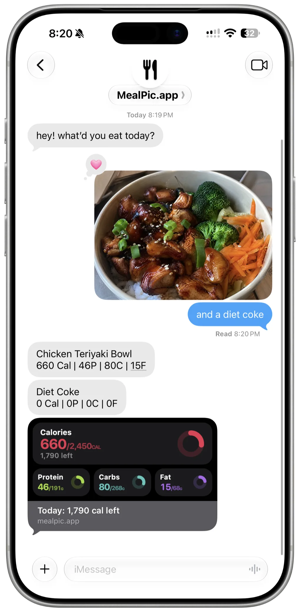

Meal Pic
No app.
No account.
Just text.
Send a photo of your food to a number. It texts back the calories and keeps score.
Open MessagesIt's a real number: +1 (818) 601-1988
didn't open? text +1 (818) 601-1988
